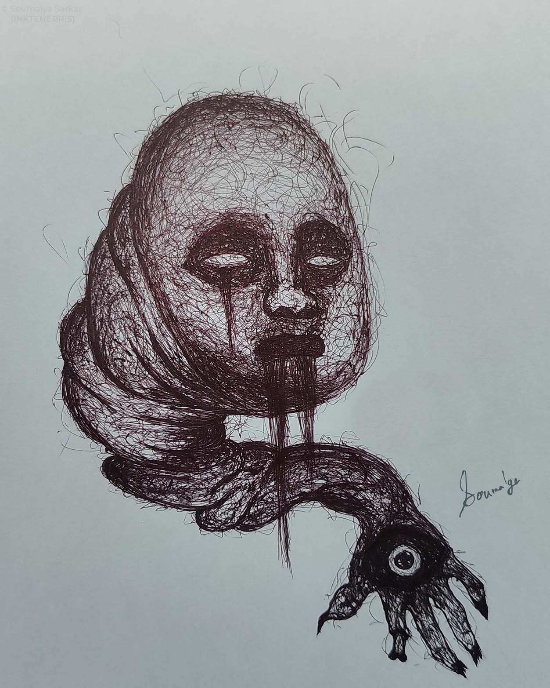

06
THE HAND THAT SEES
MEDIUM
Ballpoint Pen
CATEGORY
Dark Surrealism
STATUS
Artist Collection (Not For Sale)
DIMENSION
210 × 297 mm (A4)
DATE
08 APRIL 2024
ARTIST
Soumalya Sarkar
COLLECTION
INKTENEBRIS
A surreal fusion of touch and perception. The eye emerges from the hand as a symbol of awareness, suggesting that understanding can come through instinct, memory and sensation rather than sight alone.
"Some truths are felt before they are seen."